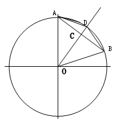

垂径定理是怎么证明的？
2009-01-31
不要照搬概念，我不要内容或推论……我只要垂径定理的证明过程，各位好心的网友，如有知道的，在下万分感激……
证明:条件给定垂直于弦的直百径平分这条弦,但不一定平分这条弦和弧.先画出弦AB,通过圆心作直度径,并垂直于弦AB交于C点,交弧于D点.如图所示.在△知AOB中,因为AO=BO(都是圆的半径),所以△道AOB是等腰△,∠OAB=∠BOA, 在△A0C和△BOC中,∵∠BCO=∠ACO=90(条件给定),∠OAC=∠OBC(刚才已证出),AO=BO(都是圆的半径),OB=OB(公共边),∴△ANP≌△QNP.得出,∠AOC=∠BOC ∴AC=BC 因此证版明出,垂直于弦的直径平分这条弦在△A0D和△BOD中,用上面刚用过的条件和推导出来的权条件同样得出,△A0D≌△BOD∠AOD=∠BOD∴弧AOD=弧BOD(圆心角相等,其对应的弧也相等)因此证明出,垂直于弦的直径也平分这段弧.
